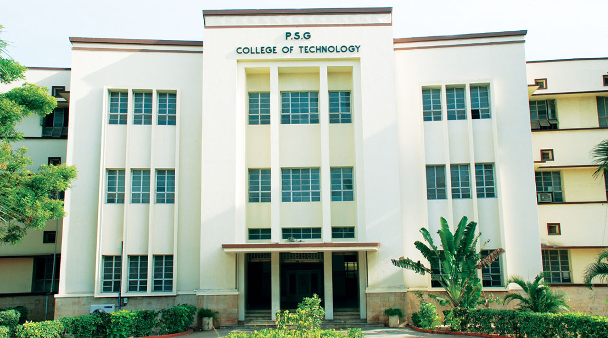

CVEC college


information:
A college (Latin: collegium) is an educational institution or a constituent part of one. A college may be a degree-awarding tertiary educational institution, a part of a collegiate or federal university, an institution offering vocational education, or a secondary school.
In most of the world, a college may be a high school or secondary school, a college of further education, a training institution that awards trade qualifications, a higher-education provider that does not have university status (often without its own degree-awarding powers), or a constituent part of a university. In the United States, a college may offer undergraduate programs – either as an independent institution or as the undergraduate program of a university – or it may be a residential college of a university or a community college, referring to (primarily public) higher education institutions that aim to provide affordable and accessible education, usually limited to two-year associate degrees.[1] The word is generally also used as a synonym for a university in the US.[2] A college in some countries [fr]—France (see secondary education in France), Belgium, and Switzerland
contact us for any quirees
Main Branch:Hyderabad,
Branches at:vijayanagaram,vijayawada,Guntur.